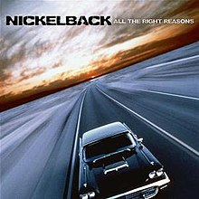
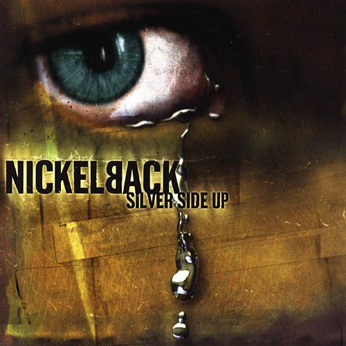

"Nickelback is a Canadian rock band formed in 1995 in Hanna, Alberta, Canada. The band is composed of guitarist and lead vocalist Chad Kroeger, guitarist, keyboardist and backing vocalist Ryan Peake, bassist Mike Kroeger, and drummer Daniel Adair. The band went through several drummer changes between 1995 and 2005, achieving its current lineup when Adair replaced drummer Ryan Vikedal.
Nickelback is one of the most commercially successful Canadian rock bands, having sold more than 50 million albums worldwide. In 2009, Billboard ranked them the most successful rock group of that decade; their song "How You Remind Me" was listed as the best-selling rock song and the fourth best-selling song of the decade overall. They were listed number seven on the Billboard top artist of the decade, with four albums listed on the Billboard top albums of the decade.
The band signed with Roadrunner Records in 1999 and re-released their once-independent album The State. The band achieved significant commercial success with this album, as well as with its follow-up, Silver Side Up, in 2001. Following the release of Silver Side Up the band released their biggest and most well-known hit today, "How You Remind Me", which peaked number 1 on both the Billboard and Canadian Singles Charts. The band's fourth album The Long Road, was released in 2003 and spawned five singles including Canadian number one "Someday", which also peaked at number 7 on the Billboard Hot 100. Afterwards, the band put out their biggest-selling album to date, All The Right Reasons (2005) which produced three top 10 singles and five top 20 singles on the Billboard Hot 100 including "Photograph", "Far Away", and "Rockstar". The band's album Dark Horse (2008) was another commercial success, producing eight singles, one of which peaked on the top 10 on the Billboard Hot 100 and two of which peaked on the top 20 on the Billboard Hot 100. In 2011, the band released their seventh album Here and Now which again topped the charts.[7] Their eighth studio album No Fixed Address was released on November 17, 2014, and their ninth studio album, Feed the Machine, was released on June 16, 2017.
The band is based in Vancouver, British Columbia. The band's original domestic signing was with EMI Canada, but they subsequently obtained an American deal with global distribution via Roadrunner Records. For the release of their seventh album, the band parted from EMI Canada and signed to Universal Music Canada."
Citation: The Free Encyclopedia, Wikipedia. “Nickelback.” Wikipedia, Wikimedia Foundation, 12 Jan. 2020, en.wikipedia.org/wiki/Nickelback.
Album Name: All The Right Reasons
Favorite Song: "Rockstar"
"All the Right Reasons is the fifth album by Canadian rock band Nickelback, released on October 4, 2005 on Roadrunner Records. It is the band's first album with former 3 Doors Down drummer Daniel Adair, who replaced Ryan Vikedal in January 2005. The album topped the Canadian Albums Chart and the US Billboard 200 albums chart and has sold 12 million copies worldwide. It is Nickelback's best-selling album to date, according to certifications from the CRIA, the RIAA, and the BPI. Seven singles were released from the album. The album re-entered the Finland Albums Chart in 2010, setting a new peak position at number 21."
Citation:The Free Encyclopedia, Wikipedia. “All the Right Reasons.” Wikipedia, Wikimedia Foundation, 25 Jan. 2020, https://en.wikipedia.org/wiki/All_the_Right_Reasons.

Album Name: Dark Horse
Favorite Song: "If Today Was Your Last Day"
"Dark Horse is the sixth studio album by the Canadian rock band Nickelback, released on November 17, 2008, in Europe and a day later elsewhere. It is the follow-up to their multi-platinum selling All the Right Reasons (2005). It was co-produced by the band and producer and songwriter Robert John "Mutt" Lange, known for working with such acts as Foreigner, AC/DC, Bryan Adams, Def Leppard and Shania Twain. Dark Horse sold 326,000 in its first week and debuted at number 2 in the US. More than a year after its release, the album did not leave the Top 100 on the Billboard 200. In its 91st week, the album peaked at #46 for the week of August 28, 2010. From 9 October, the album stayed at #71 for 97 consecutive weeks The album spent 125 consecutive weeks inside the Billboard 200. On the week of November 29, 2014, Dark Horse re-entered the Billboard 200 at #195, more than six years after the album's release."
Citation: The Free Encyclopedia, Wikipedia. “Dark Horse (Nickelback Album).” Wikipedia, Wikimedia Foundation, 3 Nov. 2019, https://en.wikipedia.org/wiki/Dark_Horse_(Nickelback_album).

Album Name: Silver Side Up
Favorite Song: "How You Remind Me"
"Silver Side Up is the third studio album by Canadian rock band Nickelback; it was released on September 11, 2001. According to AllMusic, Silver Side Up continued Nickelback's tradition of "dark high-octane rock" from the band's first two albums. It reached number one in Canada, Austria, Ireland, New Zealand and the United Kingdom. The album was certified 8× Platinum in Canada, 6× Platinum in the US, and 3× Platinum in the UK. Thus far, Silver Side Up is one of only two Nickelback albums to not have 11 tracks; there are only 10 tracks on this album, while 1996's Curb has 12."
Citation: The Free Encyclopedia, Wikipedia. “Silver Side Up.” Wikipedia, Wikimedia Foundation, 27 Jan. 2020, https://en.wikipedia.org/wiki/Silver_Side_Up.
If you enjoyed this website, please fill out this visitors form!